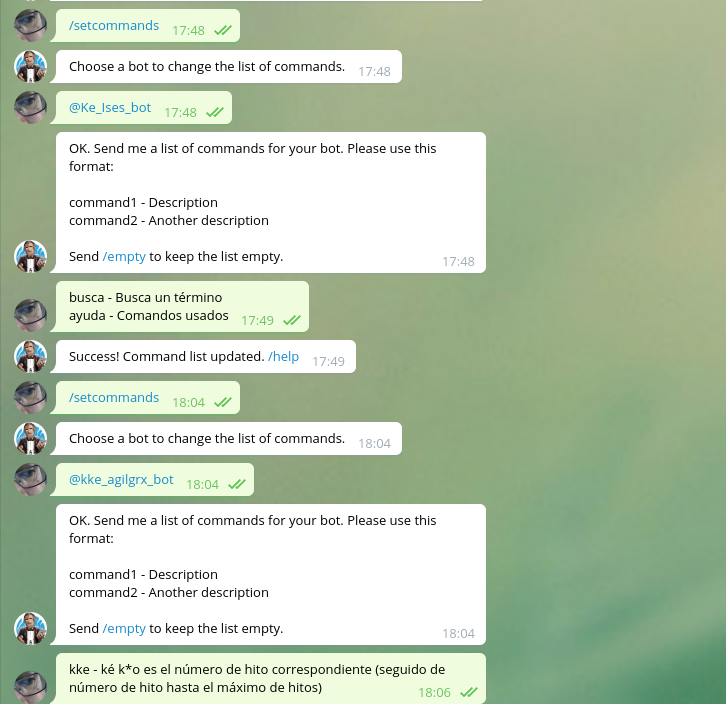

Using Telegram bots in class
JJ Merelo, University of
Granada
Developing
software (Perl, Raku ) since 1983
Professor (University of Granada) + senior software
engineer (polypoly)
What do people want from messaging
platforms?
Merelo, Castillo, Mora, Barranco, Abbas,
Tsivitandou, Chatbots and messaging
platforms in the classroom: an analysis from the
teacher's perspective , work in
progress
Factual base of what is going
to be told in this paper
No worries
Peer-to-peer
Familiarity
Pluggability
Telegram is
Familiar (mainly in IT),
~65-70% penetration
Groups are
horizontalOpen API: enables
bots
Interacting with the Botfather

It's "chat" in the sense that
it's in a "chat" room; it does not engage the user
with conversation (it might, though), at least these
we have programmed
Let's go for Telegram
Free creation of bots
through "Botfather"
"Slash" commands
Reactive bots using any language
It's also what I'm
already using, so...
What do we want to do with it?
Class schedule
FAQ
From the same work in
progress, except the last one
What do I want?
Virtual check-in
Postprocessing...
Towards learning
analytics
The depletion of class attendance
is clearly there, although the initial intention was to
find out who was close to whom in case of COVID
infection
Also: fast class feedback
Help with class material: kke